ActD Supprimer une note
UMLActivity
Untitled
::
Note
::
Activity Diagram
::
ActD Supprimer une note
Description
none
Diagrams

ActD Supprimer une note
Groups
Utilisateur
SI
BDD
Nodes
Demander confirmation
Confirmer la suppression
Vérifier confirmation
Envoyez la requête de suppression
Action1
Action2
Vérifier retour BDD
DecisionNode1
Message "Note supprimer"
Edges
(InitialNode1→Cliquer sur supprimer une note)
(Cliquer sur supprimer une note→Demander confirmation)
(Demander confirmation→Confirmer la suppression)
(Confirmer la suppression→Vérifier confirmation)
(Vérifier confirmation→Envoyez la requête de suppression)
(Envoyez la requête de suppression→Exécuter la requête de suppression)
(Exécuter la requête de suppression→Vérifier retour BDD)
(Vérifier retour BDD→DecisionNode1)
TRY (DecisionNode1→Message "Note supprimer")
(Message "Note supprimer"→ActivityFinalNode1)
CATCH (DecisionNode1→Afficher l'erreur SQL)
(Afficher l'erreur SQL→FlowFinalNode1)
Properties
Name
Value
name
ActD Supprimer une note
stereotype
null
visibility
public
isReentrant
true
isReadOnly
false
isSingleExecution
false
Owned Elements
ActD Supprimer une note